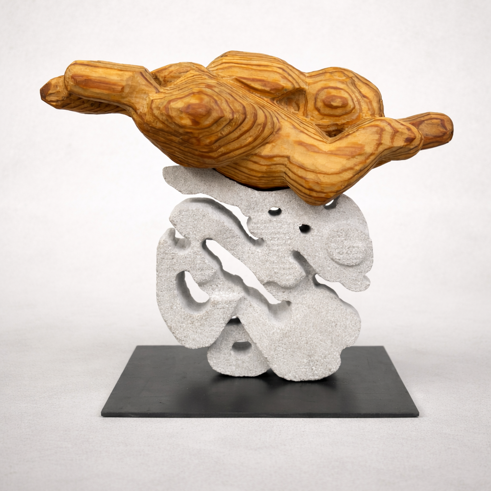

Take My Sickly Pallor
Wood, limestone
6” x 8” x 4"
2026

Take My Sickly Pallor is a wood and stone sculpture depicting a rabbit mid-leap over a illustrative carved fire.The rabbit symbolizes luck and fragility, while the fire represents danger. Together, they form a moment defined by fragile luck.
In 2025 I faced a serious health crisis, where the body becomes unfamiliar and survival feels less like a given than a negotiation. Carving this piece was my version of the leap.
While working on the piece, a friend shared with me the Persian tradition, Chaharshanbe Suri, celebrated on the last Wednesday before Nowruz, the Perisan New Year. People jump over bonfires and chant: "give me your red, take my yellow" -- surrendering illness and pallor, receiving vitality in return.
🖼️:
▫️ The Art Students League of New York Annual Student Art Show, Phyllis Harrison Mason Gallery, New York, NY (2026)